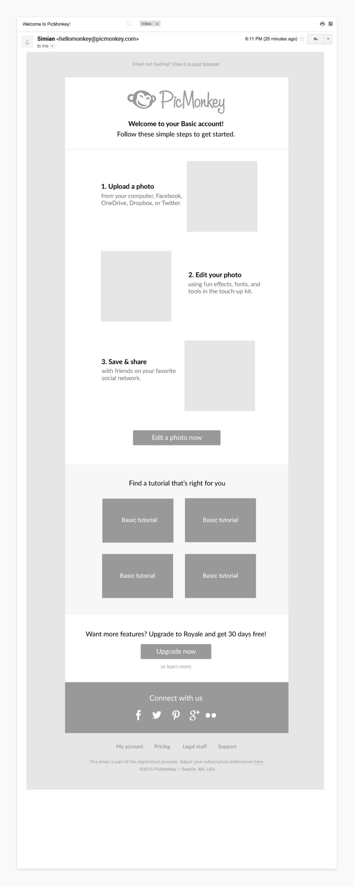

Welcome & Onboarding
PicMonkey had two tiers of users: Basic Users and Royale Users. The only emails either tier received regarding their account were upgrade notifications and the PicMonkey newsletter. My first project was to optimize the Welcome flow for all new users (Basic and Royale) as well as the Onboarding flow that followed.
I sketched out every possible scenario a new user could find themselves in, and made note of the existing scenarios we already had in place. For example, we were sending emails asking users to upgrade, but not to confirm their sign up or welcome them to the service.

PicMonkey had an archive of great tutorials, so we decided to add targeted tutorials to onboarding emails based on how long the user was active. For example, new users would see beginner tutorials such as "5 Photo Editing Best Practices", while more seasoned users would see advanced tutorials like "How to Make a Double Exposure".
Not long after the wireframes were created, priorities shifted for the product team. We put this project on the backburner while I focused my attention on a new project.
Had the scope of my contract been longer, I would have revisited this project and polished the visual design, performed user testing, and iterated on designs that incorporated the user testing results.